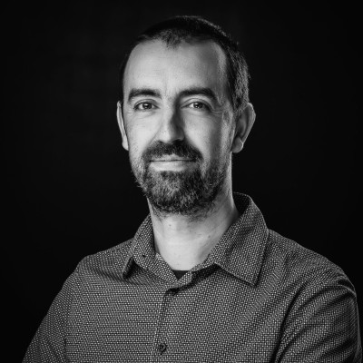

Matthias
Goderis

in IT & software
ERP-platform
(Race for the Cure)
mee gerealiseerd
directieverantwoordelijkheid
Profiel
IT-manager en businessgerichte technologieleider met 25 jaar ervaring in het aansturen van IT, teams en digitale projecten binnen zowel publieke als private organisaties.
Combineert een sterke technische achtergrond met ruime ervaring in people management, procesoptimalisatie, software-architectuur en het begeleiden van organisaties in veranderingstrajecten.
Verantwoordelijk geweest voor de uitbouw van complexe IT-landschappen, ERP-processen, internationale applicatieplatformen en de aansturing van teams tot 46 medewerkers.
Sterk in het verbinden van businessnoden, technologie en mensen binnen groeiende en veranderende organisaties.
Werkervaring
Mede-zaakvoerder
Mede-opbouw van een communicatiebureau van start-up met vier personen tot organisatie met circa 22 medewerkers. Eindverantwoordelijk voor technische realisaties, processen en HR-structuur.
- Technische eindverantwoordelijkheid voor het volledige applicatielandschap: webapplicaties, e-commerceplatformen en SaaS-tools.
- Coördinatie van circa 200 digitale projecten, met focus op schaalbaarheid, integraties, onderhoudbaarheid en langetermijnvisie.
- Ontwikkeling en onderhoud van het volledige applicatielandschap voor Think Pink.
- Race for the Cure — internationale uitrol in 30 landen en 24 talen, inclusief coördinatie met landenteams.
- Vakbondsplatform — beveiligd communicatieplatform tussen directie en afgevaardigden gebruikt door 14 afdelingen van een grote vakbond.
- Opstart en structurering van HR-beleid, processen en interne werking.
- Actieve brugfunctie tussen klanten, businessnoden en technische teams.
Directeur Informatica & Personeelsbeheer
Promotie naar dubbele directiefunctie met verantwoordelijkheid over IT-strategie, personeelsbeleid en organisatiebrede ondersteuning.
- Aansturing van IT en interne diensten; brugfunctie tussen management, medewerkers, IT en externe stakeholders.
- Verantwoordelijk voor het volledige personeelsbeleid binnen een organisatie van ±46 medewerkers.
- Coördinatie van digitalisering, processen en verdere professionalisering van de organisatie.
- Vertegenwoordiging bij sectororganisaties, kabinet en VMM.
Systeembeheerder & Softwareontwikkelaar
Ontwikkeling, architectuur en onderhoud van het volledige softwarelandschap van de watermaatschappij. Werkte van bij aanvang aan kernsystemen met directe impact op tienduizenden gezinnen.
- Klantenadministratie & facturatie — eigen ERP-platform voor 50 000 klanten en circa 150 000 facturen per jaar.
- Ontwikkeling van software voor werkbonnen, planning en interne processen.
- Opzet van een GIS-systeem voor het beheer van het volledige leidingennet.
- Trekkende rol in de implementatie van de integrale waterfactuur; vanaf 2004 vertegenwoordiging bij kabinet en VMM.
- Integraties met externe platformen en databronnen (VMM, KSZ, heffingsgegevens, sectorpartners).
- Volledige softwareomgeving ontworpen, gebouwd en onderhouden door een kernteam van slechts 2 personen.
- Eigen oplossingen werden later overgenomen door drinkwatermaatschappijen van Knokke-Heist en Hasselt.
Vaardigheden
IT Leadership & Organisatie
- IT-strategie & roadmap10+ jaar
- People management & coachingTot 46 medewerkers
- StakeholdermanagementPubliek & privaat
- Procesoptimalisatie & digitaliseringSterke ervaring
- Project- & roadmapbeheerComplexe trajecten
- HR & organisatieopbouw10+ jaar
Business, Processen & Applicaties
- Businessanalyse & functionele vertalingSterke ervaring
- ERP & bedrijfsprocessenAnalyse & implementatie
- Integraties & datastromenExterne platformen
- Software-architectuurGrootschalige systemen
- Performance & schaalbaarheidProductieomgevingen
- Internationale platformen30 landen · 24 talen
Technologie & Data
- C# / .NETRuime ervaring
- SQL Server & datamodelleringSterk
- Angular / TypeScriptActief gebruikt
- JavaScript / HTML / CSSRuime ervaring
- Cloud & infrastructuurAansturing externe partners
- AI & automatiseringSterke interesse
Talen
Opleiding
Master in de Informatica
Vierjarig universitair traject met focus op systeemontwerp, algoritmiek en software-engineering — fundament voor alles wat volgde.
Grote OnderscheidingPermanente vorming
- SQL Server — Syntra West
- Angular — U2U
- Leidinggeven — intensieve weekopleiding bij Joan Dewinne